| Home | Abstract Submission | Registration | Programme | Contact Us |
The Postdocs and Industry in Nuclear Energy (PiNE) 2027 meeting — previously known as Postdocs in Nuclear Energy — continues to bring together post-doctoral or equivalent-level researchers working in nuclear energy across the UK.
The 2027 edition continues the expanded focus on collaboration between postdocs and industry professionals, aiming to strengthen connections between academic research and practical applications in the nuclear sector as well as reach the wider topics such as medicine.
As always, PiNE offers an informal and supportive environment where researchers can share their work, explore collaborative opportunities, and learn more about developments in nuclear energy research and innovation.
A range of invited speakers from academia, government, and industry will present on current projects, provide career insights, and discuss the future of nuclear energy research in the UK.
PiNE 2027 will take place at the The University of Manchester, Manchester, on April 2027.

This year’s PiNE is organised by research staff from the Dalton Nuclear Institute (DNI) at the University of Manchester. The Dalton Nuclear Institute brings together the largest and most diverse nuclear research community in UK academia. Based at The University of Manchester, we connect expertise across disciplines to address challenges in nuclear science, engineering and society. With a major portfolio of nationally significant facilities and collaborations, our work spans the full breadth of the nuclear field, from fundamental research through to real-world applications.
Interested in providing sponsorship? Please reach out to PiNE27@manchester.ac.uk to discuss!